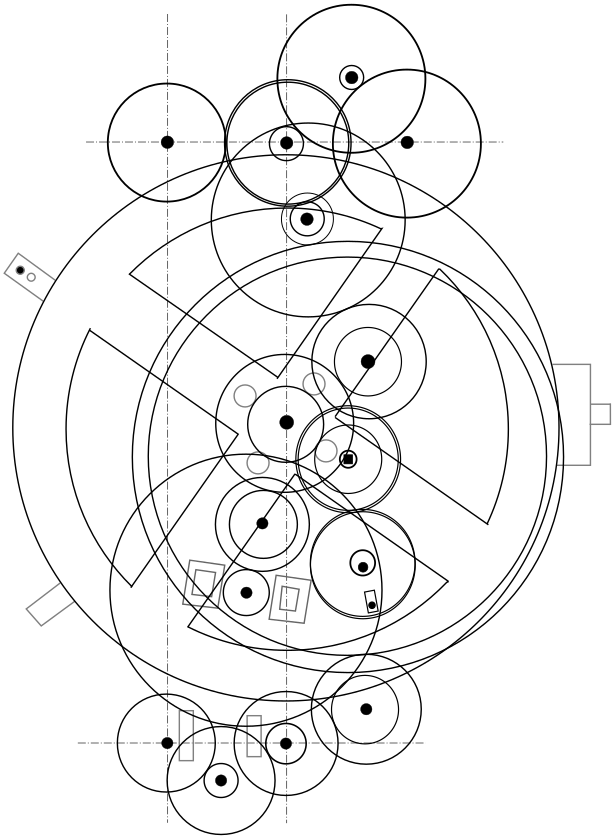

Assembly language is the lowest level available of software programming.
It’s bare to the metal, you have access to all of what is possible to do with the computer.
It could be tedious, programming complexity explodes, yet, in some situations it’s inevitable to access the full power of the machine.
It’s the foundation of everything you run on a computer, if you explore it, if you learn from it, you’ll really understand how machine works.
Software programming is some kind of wizardry, it’s NOT about computers, it’s NOT a science. It’s an art.
I highly recommend the book: Structure and Interpretation of Computer Programs from Gerald Jay Sussman and Hal Abelson.
And I recommend even more their own lectures of it, recorded in the 80’s, in front of Hewlett-Packard professionals. This is History and a corner stone of Computer Science.
You can freely access to them on the MIT site: SICP Video Lectures
“Any sufficiently advanced technology is indistinguishable from magic”
Arthur C. Clarke - Profiles of the Future: An Inquiry into the Limits of the Possible
Reality is that programming is the current final destination of Human History with technology engineering. Thousands of years of evolution and concept refining.
We build machines for so long that we don’t even know when it started. There are many kind of machines, at the beginning they had different usages and purposes, often unrelated.
Years passing some abstract concepts emerged and were blent, the modern processors and computers are the result of all this journey. And it’s based upon everything we did earlier.
The first machine, if we accept the abstract concept “If <condition> Then Do <something>”, can bring us back to thousands of years, or more: the trap.
A trap is a machine which whenever something is detected, it triggers a mechanism to capture or kill a prey. It can be autonomous and uses laws of physics to implement the idea.
Abstractly, a trap is composed of a sensor and an actor bound together through a smart mechanism, which can be very simple.
We have few documents of all primitive machines which can have been invented and constructed. But we have some information about the greek and roman epochs, “Antiquity”.
One of the notable machine we discovered is the Antikythera mechanism. It’s evaluated to have been manufactured and used around one or two centuries BC.
It’s build around gears and serves as some calendar, and it’s believed that it was used to predict astronomical events.
Some reconstruction:
 
Another kind of machine was used at the time, to use the sun light to look up for day time. The Sundial…
Note that those two machines can be abstracted as lookup mechanism. The sundial being the simplest and using geometry to simply project a shadow at the current hour. The Antikythera mechanism, uses cogs and gears to point to some engraved “tables”.
We’ll skip a lot of steps, not because they are worthless, but because of limited time. But we see more and more complex machines during History.
Mathematician, he invented the first calculator. Doing “simple” additions and substractions.

Without digging into details, the way of working is simply based with common amplification resulting from different sized gears. For sample, if one gear do one full turn, the other one do a tenth of circle, this way you can count units, tenths, hundredths and so on.
Note that this is the start of actual automatic complex calculation. The machines knows nothing about numbers, it’s just built so the moving parts follow the semantic we expect, mechanically, in a dumb way.
Geneva’s Antoine Favre presented the «carillon sans timbre ni marteau».
1725 Basile Bouchon and Jean-Baptiste Falcon invented the “punch cards” to program looming devices.
Punch cards allow to define patterns to activate or not a process on one “line”.
1752-1834 Joseph Marie Jacquard (Lyon - 1801). Aimed to reduce child work.


Origin is unknwon. Oldest one date from 1502 (Salzburg Castle) named the Salzburg Bull.

Are you OK Annie?
Take a chance*
Marble game
Nowadays, some musician took the challenge to build a modern “mechanical” music machine, using marbles.
You’ll noticed that all those machines explored several concepts we are still using nowadays.
Modern computers expand on those ideas, and with re-writable medium allows dynamic behaviors, and self modifying processes. At no point we requires the machine to understand what we manipulate, it just does dumb things. It’s the way we build and program them, and the way we expose results which makes sense for us.
Alan Turing was one of the early explorer of modern computers, he described a theoretical machine able to compute “anything”.
It’s based on an infinite tape giving instructions, providing data, and recording results. And some heads reading and writing symbols from the tape. The machine have an instruction set, which is mapped on the symbols.
Modern computers are an implementation of a Turing Machine (and Von Neumann architecture). Memory is the tape, and the processor is the computing machine. Note that a computer is composed of MANY tiny turing machines (processors), we will focus on the CPU (Central Processing Unit), which is the core one, the one driving the other ones. But basic principle stays the same.
Some Theorists and mathematicians led the way to the simplest element to build a “smart” machine.
George Boole is one of them, introducing boolean algebra and ways to express things with two values true and false, building basis of numerical logic.
Claude Shannon is another pillar of this movement, starting to implement boolean algebra and arithmetic on electronic relays and switches.
George Stibitz built a relay-based computer able to calculate from binary addition.
One of the physical advantages of binary states (on/off) is it’s more stable and protected from noise than pure analog hardwares. Electricity signal is not stable, it varies depending of electromagnetic environment, current fluctuations and many other factors.
A binary state can be easily construct using a threshold. If the current tension is below this threshold it’s considered as off, while when it’s over it’s on. The threshold can be easily chosen knowing the error amplitude of the signal, so the state is resistent to small fluctuations.
Thanks to binary states, we can build simple logic components, mapping the Boolean logic to electric construction called logical gates.
Logical gates are the lower primitives, the foundations allowing to build every logic we can imagine and need.
Thanks to this simple element, we were able to both build numerical models on the information side (the logic, abstraction) AND huge physical advantages, is robustness of carrying and processing information, and the ability to miniaturize the bricks at fantastic levels. Moderns processors are implemented at atomic scale level… Only a few atoms separate all elements.
Between 1957 and 1959, Mohamed Atalla and Dawon Kahng developed the first modern semiconductor, using silicon, our current technology is directly derived from their work.
I assume that you know the basic logical gates, and won’t go into details about them. I’ll focus on how to use them to do something more, something else.
We start with arithmetic.
So we start with some primitive operations: AND, OR, XOR ,NOT. I assume you all know what they mean and their logical table.
So a logical gate takes two input binary states and configure itself to output one binary state.
The gate knows nothing, understand nothing it’s just built to match a reaction table, based on boolean logic. As humans, we decide of the semantic of what off and on means for us.
Obviously it can mean simply on and off and that’s the semantic we want in some situations.
Also obviously it can means true or false which is the link to boolean logic.
But it can also mean for us one (1) or zero (0), and that’s what we do when we talk about a “bit” (binary digit).
So we want to build an addition operation. So how do we add two numbers ?
The principle is the same as the way we learn to add decimal numbers. We simply project it to base-2 system.
We can create a table for 1 digit binary addition:
| + | 0 | 1 |
|---|---|---|
| 0 | 0 | 1 |
| 1 | 1 | 10 |
We can first consider the least significant bit, and observe something interesting.
| ?? | 0 | 1 |
|---|---|---|
| 0 | 0 | 1 |
| 1 | 1 | 0 |
Notice it’s exactly the same table as the XOR logical table.
But we left the second bit in the 1+1 result. Note that his bit is the “carry” of the addition.
So we now observe the addition table, but only with the result carry bit. Note that we assume implicit leading zeros from the addition table (0 = 00 ,1 = 01).
| ?? | 0 | 1 |
|---|---|---|
| 0 | 0 | 0 |
| 1 | 0 | 1 |
Here again we can notice that it matches perfectly with another logical table, the AND one.
So to add a binary digit with logical gate we use two gates:
Instead of working with one bit, we now can extend the principle to bit vectors. Parallelizing logical gates, we can have a “vector of states” as input, and a “vector of states” as output.
In processors, an array of bit is a machine word. The architecture of the processor drives the size of this word. That’s what makes a 8 bit, 16 bit, 32 bit, 64 bit and so on processors.
Vectors of bits allow introduction of a new operation shifting. It consists of shifting the state pattern “right” or “left” for one or more bits.
In C-like languages, we often use the scalar type int for integer to relate to, nowadays, 32 bit bit vectors. So applying what we’ve seen before, we can do a vectorized addition, to add multiple digits numbers.
The algorithm is simple, shown in C-style:
// Binary integer addition without addition operator.
int add( int a ,int b ) {
int acc = a ,carry = b;
while( carry ) { // We need to repeat while there's some carry left.
int xorResult = acc ^ carry; // Do a parallel "addition" of all digits (individual bits).
carry = (acc & carry) << 1; // Get carry and shift it to the left.
acc = xorResult;
}
return acc;
}So now we have another operation with the “shift” thanks to manipulating a vector of bit.
But what is the semantic of a shift ?
On the physical level, it’s just a pattern rotation. But we can note something, looking again to our well known decimal arithmetic.
What means shifting a decimal number ??
Note that in the base-10 notation, shifting by n means multiplying by 10^n.
So now we can find another semantic to the shift operator: it allows to multiply by an integer power of the number base.
| Left Shift | base * | * |
|---|---|---|
| x << 1 | x * 2^1 | x * 2 |
| x << 2 | x * 2^2 | x * 4 |
| x << 3 | x * 2^3 | x * 8 |
| … | … | … |
You might now have an idea about why computer programmers love using power of two numbers, they are easy to use, and requires only shift-ing.
Reciprocally shifting to the right is equivalent to divide by base^n, if we consider the state vector as an integer encoded in binary.
| Right Shift | base * | * |
|---|---|---|
| x >> 1 | x / 2^1 | x / 2 |
| x >> 2 | x / 2^2 | x / 4 |
| x >> 3 | x / 2^3 | x / 8 |
| … | … | … |
So we got the Turing Machine, Von Neumann architecture as an physical implementation of the Turing Machine, and a way to handle states and methods to give states some semantic.
Assembly language is the one to one human readable version of the machine language.
The Turing Machine defines a machine with an “instruction set”, assembly languages define mnemonics so we don’t have to encode instructions as a raw binary state.
Assembly language is translated by a program named assembler, which takes an assembly source (in text format) and output a binary stream of machine code.
Each processor architecture have its own instruction set, or dialect. It’s highly mapped to the hardware constraint. For sample, the size of the words used for computations.
But beside the processor architecture, assembly programming requires to know the computer (or board) architecture too. How memory is mapped, what port is bound to what external component, communication with other software components (BIOS, Operating System) and so on.
The assembler is a powerful tool. Simple but efficient. Beside instruction translation to machine code, it also help the developer to manipulate memory addresses seamlessly using “labels” and calculating the right values for the developer.
Actually the assembler simply keep a track of the generated machine code size, to and use it for address translation.
So a label is simple a “stamp”, driven by its location in the source code, it references the generated address in the binary code. This allow the programmer to just reference names instead of calculating the values.
For this course, we’ll use nasm assembler, it’s free and open, and can be used to target several architectures.
The legacy original model for the x86 family, is called the “Real Mode” (as opposed to the “Protected Mode”, introduced with later versions).
In this model, and DOS, the program is a first class citizen on the machine, it can do WHATEVER IT WANT… It can even breaks things, from crashing the machine to actually destroy hardware.
The original model is based on a 8/16 bit processor, which used 16 bit machine words, and address memory using a 20 bit value.
How can this machine can access 20 bit memory address range while using 16 bit registers ?
The solution chosen was to use 2 16 bit words, and introducing a concept of segments and paragraphs.
This way the whole memory is access using 65536 segments, starting each 16 bytes, called one paragraph.
The accessible range of one segments is 65536, using the offset 16 bit word.
Linear byte address on the machine can be calculated this way:
<memAdress> linearAddress( u16 segment ,u16 offset )
=> (segment << 4) | offsetYou can see that segments overlaps.
We often use a segment to address the base of a 64 Kilobytes block.
The x86 have s 16 bit registers:
| register name | usage |
|---|---|
| ax | generalist |
| bx | generalist ,base index |
| cx | generalist ,counter |
| dx | generalist |
| —- | —- |
| cs | code segment pointer |
| ip | instruction pointer |
| ds | data segment |
| es | extra segment |
| si | source index |
| di | destination index |
| —- | —- |
| Flags | operation status |
The generalist registers, can be references by their individual bytes (high and low).
| 16 bit register | high 8 bit | low 8 bit |
|---|---|---|
| ax | ah | al |
| bx | bh | bl |
| cx | ch | cl |
| dx | dh | dl |
if ax = 01234h
then ah = 012h
and al = 034hQuick review of registers here
There are different ways to store a processor word into the memory. Those ways are named endianess.
x86 architecture uses litte endians which means least significant byte are written first.
If we store an 32 bit integer value (012345678h) at some address in memory, it will be written as:
| Memory address offset | +0 | +1 | +2 | +3 |
|---|---|---|---|---|
| 078h | 056h | 034h | 012h |
It might seems weird, and somehow… it is, but note that you can truncate a number easily from the same address:
If you read 2 bytes, you get 05678h… If you read one byte you get 078h. This is a way to easily truncate a number keeping bit offset, while reading or writing at the same address.
Storing the bytes the other way around is called big endian. It’s often used as a portable way to store binary data, as a contract between machine with different endianess. In fact, big endian is often called network encoding. It can be used on many file formats, intended to be “portable”. But of course it’s arbitrary, when you define a binary format you also define it’s endianess. And if you want it to be portable, you have to be sure to reorder bytes depending if you need to translate from one endianess to another one.
Some memory range are mapped to specific usage. Again this mapping partially depends on the memory model and we’ll see the Real Mode (Legacy) one. Protected mode introduce other constraints (and virtual mapping).
At the very beginning lies the Interrupt Vector Table. It’s an array holding the addresses of interrupt handlers.
Then comes some BIOS data, and the OS BootSector. At boot time, the BIOS loads the boot sector of the boot device (floppy disk or hard drive) into a specific location in memory (07c00h in this model), and jumps to the first byte of this loaded sector, assuming it’s CPU instructions. Boot is responsible to setup the OS interrupts and do some tweak to prepare for future processes to run.
Then there’s the application space, where the OS loads the requested programs, usually, memory is used from bottom to up, from low addresses to high addresses.
Up in the addresses are more specific memory. The important one for us is the 128K starting at 0a0000h ( 0xa000:0x0000 ), which is the hardware mapped video memory. The format and exact offset used depends on the selected graphic mode.
For more details on real mode memory mapping, see…
DOS was a very simple, single user, single program Operating System. No protection is provided, like memory protection or “elevation”.
DOS executes it’s shell, COMMAND.COM which is the prompt you access after boot. This provides crude scripting features (through batch file - .BAT, aka command files, often .cmd nowadays).
Keep in mind the file system was very crude too, you have only 8 characters for the main name, and 3 characters for the extensions. You’ll have to be careful naming files accessible within the DOS environment.
Also the DOS file system is case insensitive, which actually results in all file names being upper case. But you can reference them with lower case name, it’s just a display format when you DIR a directory and the internal storage of file names.
DOS provides services through interrupt. Note that it’s a common scenario for OSes, Linux for sample, is using the interrupt 080h as an entry point to its API. DOS mainly uses interrupt 021h.
You can find the list of DOS API entry point is various “Interrupt Lists” available online, there’s one provided in the /docs directory
We will generate raw binary object, with the DOS extension .COM. The COM programs can’t be over 64 Kbytes, the file is simply binary loaded (loaded as is) in the first available memory segment, and the OS prepare all segment registers to point to that segment, then call the entry point address.
In fact, DOS prepare a 256 bytes block first, at the beginning of the process segment, which holds some system information. This is the Program Segment Prefix (PSP). You can often ignore its content, but you need to handle it for addressing: the program is loaded AFTER the PSP, which means at the segment offset 256 ( 0100h ), that’s why you need to offset addresses by 0100h in your program. This is the purpose of the ‘origin 100h’ assembler directive in your programs.
Although being limited to 64kb process image, the whole memory after the first segment is available to the program (up until the reserved one, see memory mapping above). It’s up to the programmer to manage this memory and how to address those segments.